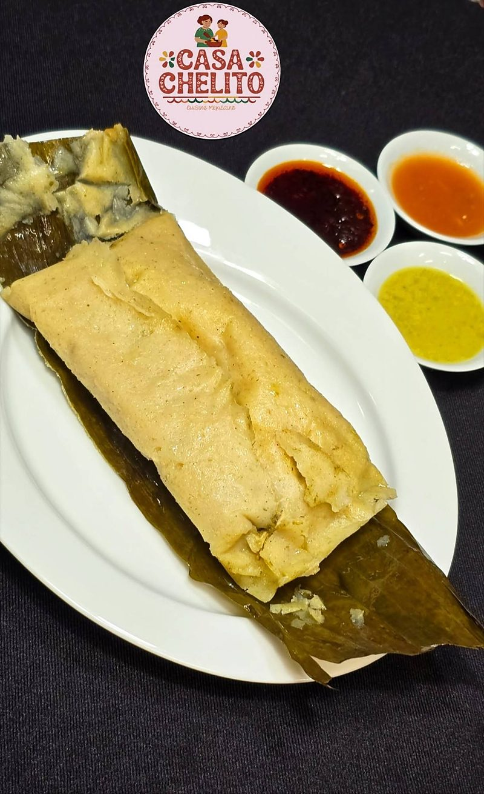
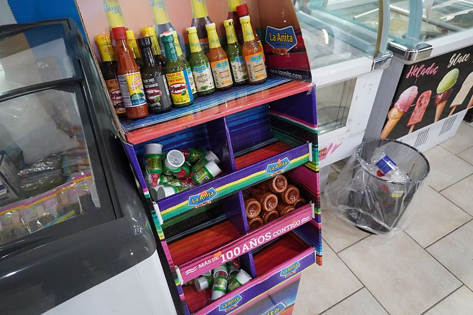
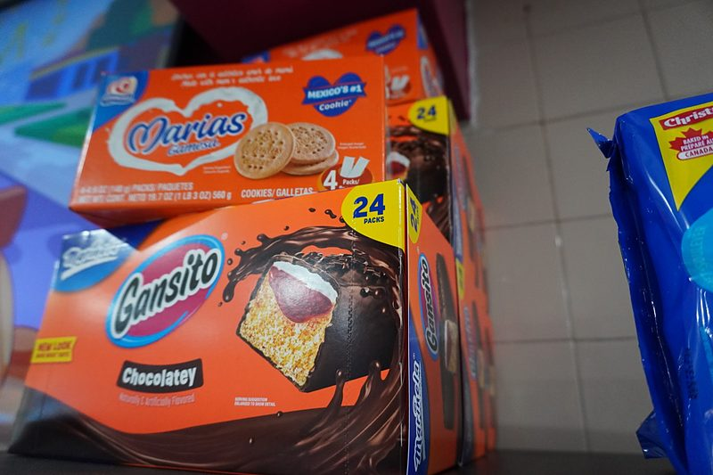
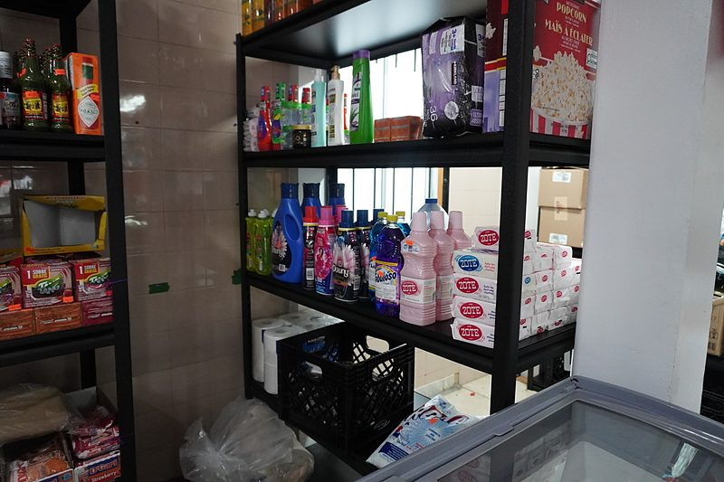

Tout ce qui vous manque
Épicerie, boissons et grignotines
Des produits mexicains pour votre garde-manger, des grignotines, des boissons et des articles ménagers.

Bien garni
Tout pour votre cuisine mexicaine
Salsas, piments, moles, conserves, épices, lait concentré et bien plus : les marques mexicaines que vous cherchez, ici à Montréal.

Il y a des tamales !
Les tamales de Casa Chelito
Des tamales enveloppés dans une feuille de bananier, moelleux et pleins de saveur, servis avec leurs salsas. Demandez ceux du jour ou appelez-nous pour les réserver.
Commander des tamales-

Garde-manger
- Sauces piquantes et piments
- Moles, épices et assaisonnements
- Haricots, piments et légumes en conserve
- Lait concentré, cajeta et desserts
-

Grignotines et sucreries
- Petits gâteaux comme Gansito et Pingüinos
- Biscuits mexicains
- Croustilles et botanas
- Bonbons mexicains
-

Maison et entretien
- Savon Zote et détergents
- Nettoyants comme Fabuloso
- Assouplissants et produits d’hygiène
-
Boissons
- Boissons gazeuses mexicaines
- Jus et boissons
- Boissons en poudre
- Café et chocolat mexicain
Vous cherchez quelque chose en particulier ? Appelez-nous pour savoir si on l'a.